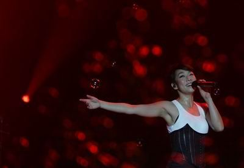

第一次看偶像的现场,没有华丽的舞台，没有多变的演出服，甚至没有噱头的嘉宾，整场演出唯一“出格”的地方就是一张床被搬上舞台。除此之外，只剩下林忆莲的歌声，陪着我们度过了一个不眠夜。我坐在看台第一排,离舞台很远,也不是很看得清楚她,当时我真的很想冲到舞蹈上拥抱忆莲姐,我发自内心地佩服她,这才是真正的大牌啊!感谢她给我们带来那么多好听的歌...

很简单,但很精致
那天忆莲姐还带给了我们一个惊喜,伦永亮教忆莲唱起了沪语版的《至少还有你》，就像欢唱童谣一样,现场观众爆发出雷鸣般的掌声和畅快的笑声感谢。台上忆莲唱得专注，台下的我们被如她此纯粹的演出感染着，陶醉于那么接近我们的林忆莲。